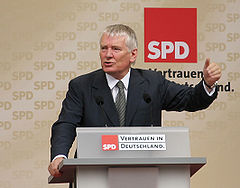
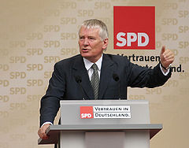

Nein
Brauchen wir eine Karenzzeit?
Wer gilt als Interessengruppe?
Legislative
Exekutive
Judikative
Medien
Lobbyismus
BVerfG, 17.8.1956, 1 BvB 2/51
Es läßt sich nicht bezweifeln, daß außerparlamentarische Aktionen vielfältiger Art denkbar sind, die einer legitimen Einwirkung auf das Parlament dienen können, vor allem soweit sie dazu bestimmt sind, die Abgeordneten über die bei den Wählern zu bestimmten politischen Fragen vorhandenen Meinungen zu unterrichten. An sich ist es daher verfassungsrechtlich nicht zu beanstanden, daß „Interessentengruppen“ auf die Mitglieder des Parlaments einzuwirken suchen […]
What for Karenzzeit?
Kontakte und Kenntnisse werden inaktuell
Kein Vorteil mehr bei z.B. beraterischer Tätigkeit
Zweck der Anstellung: Nicht Wissen und Können, sondern Kontakte
→ Noch größere Gefahr der Machtsteigerung
→ Macht der demokratisch vom Volk legitimierten Gewalt sinkt
Con:
Artikel 12 GG
(1) Alle Deutschen haben das Recht, Beruf, Arbeitsplatz und Ausbildungsstätte frei zu wählen. […]
Con:
Ministerposten können unattraktiv werden
Übergangsgeld notwendig
Pro:
 

Pro:
Attraktivität darf nicht von Berufschancen danach abhängen
Unsere Arbeit ist prinzipiell nicht öffentlichkeitsfähig
Staatliche Übergangsfinanzierung